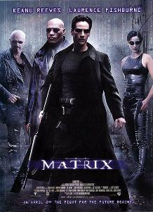

Matrix (1999) conta a história de Thomas Anderson, um jovem programador que também atua como hacker sob o nome de Neo. Ele vive em uma sociedade aparentemente normal, mas começa a perceber que existe algo estranho na realidade ao seu redor. Sua vida muda completamente quando conhece Morpheus, um homem que revela uma verdade surpreendente: o mundo em que Neo vive é, na verdade, uma realidade virtual criada por máquinas para controlar a humanidade. Ao descobrir essa realidade, Neo precisa escolher entre continuar vivendo na ilusão ou conhecer a verdadeira situação do mundo. Depois de escolher a verdade, ele passa a fazer parte de um grupo de pessoas que luta contra as máquinas e tenta libertar a humanidade. Durante sua jornada, Neo começa a questionar seus próprios limites e descobre que pode ter um papel fundamental na luta pela liberdade. O filme mistura ficção científica, ação e filosofia, abordando temas como liberdade, realidade, tecnologia, controle e escolhas pessoais.